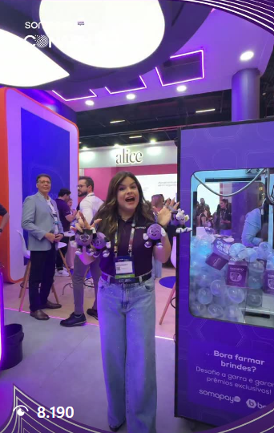
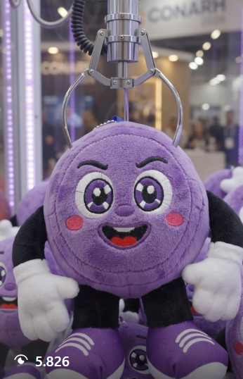
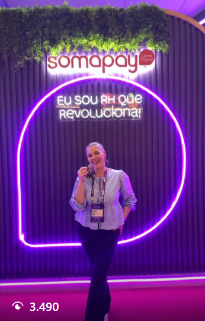
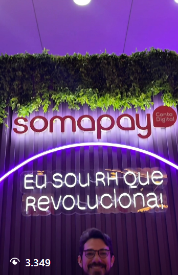

Estratégia de Conteúdo e Posicionamento:
Mascote Somito
Plano de posicionamento de marca, humanização de canal e diretrizes executivas para a Somapay.
Engajamento da Somapay
● Engajamento da Somapay: Os reels com o Somito foram o de maior engajamento e visualizações da Somapay em setembro. Esse resultado serve como uma prova de que o público responde positivamente ao mascote.
Vídeos com o Somito
Insights dos reels:

Reels 1 (Com Somito) 8.183 Visualizações
Reel 2 (Com Somito) 5.817 VisualizaçõesVídeos sem o somito
Dados extraídos diretamente dos Insights do reels:

Reel Sem Somito 2 3.483 Visualizações
Reels Sem Somito 3 3.344 VisualizaçõesReferência de Mercado (Case Duolingo)
● Referência de Mercado (Case Duolingo): O case mais citado sobre mascotes corporativos é o da coruja Duo (Duolingo). Uma de suas ações de maior repercussão foi levar o mascote fisicamente ao São João de Caruaru, gerando forte conexão emocional e pertencimento com a comunidade local, acompanhado da adaptação do personagem para múltiplas plataformas.
Fontes economic news brasil | Reels parceria com NUBANKMarketing de guerrilha expirado em taticas militares de pequenos grupos :
- Ambient marketing — usar elementos do ambiente urbano como parte da peça
- Marketing experiencial — interações físicas com o público
- Marketing de emboscada — aproveitar eventos
- Marketing viral — conteúdo projetado para compartilhamento
● Métricas de Impacto: O TikTok é a rede de melhor desempenho do Duolingo, somando mais de 16 milhões de seguidores, taxa média de engajamento de 4,03%, além de médias de 644,6 mil curtidas e 11,8 mil comentários por publicação (fonte: Brand24).
Fonte brand24Diagnóstico e Causas (Por que funciona)
Ativações, Humor e Entretenimento
- Presença de Campo: Levar o Somito a eventos populares e do setor (feiras, eventos de RH entre outros eventos) para produzir fotos, vídeos e estabelecer forte aproximação local.
- Conteúdo Curto Recorrente (TikTok, Instagram): Produzir vídeos em que o Somito reage a tendências, memes e dinâmicas cotidianas do universo financeiro de forma leve e descontraída, "Somito no dia do pagamento".
- Persona e Interatividade: Estabelecer uma presença ativa nas seções de comentários e Stories, interagindo como o próprio Somito para dar a sensação de que o personagem possui vida própria.
Calendário Editorial e Branding Físico
- Protagonismo recorrente: Inserir o Somito em um calendário editorial recorrente, garantindo que sua aparição seja constante.
- Reaproveitamento Multicanal: Adaptar roteiros e formatos entre TikTok, Reels e Stories para maximizar a cobertura orgânica mantendo custos de produção otimizados.
- Ativações de Marca: Desenvolver materiais físicos do Somito (adesivos, brindes e comunicação visual em pontos de atendimento) para reforçar a lembrança da marca fora do ambiente digital.